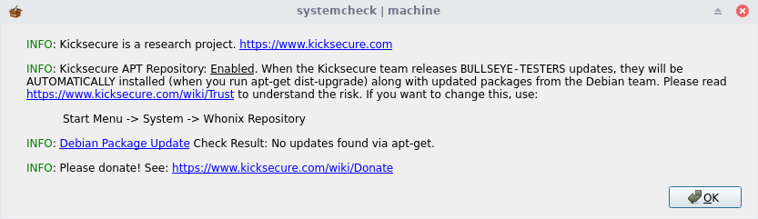
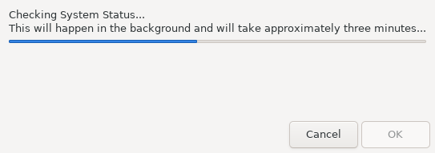
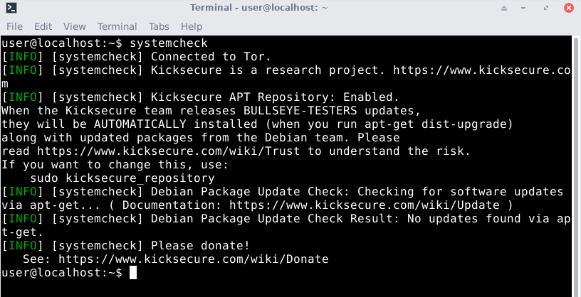
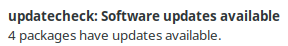

Boot firmwareDocumentationBasic Security Guide IntroductionPrevious page: Boot firmwareIndex page: DocumentationNext page: Basic Security Guide Introductionsystemcheck - Security Check Application
System Integrity Test. Connectivity Test. Update Check. And More.



Introduction
- Purpose of systemcheck: systemcheck checks numerous, important system variables to assess system status.
- Usage methods: It can be run in a command line
interface (CLI) environment (such as in a terminal emulator like
qterminal) or via the graphical user interface (GUI) option, which features a progress meter and summary notification popup. - Non-intrusive design: systemcheck is designed to be read-only and does not intentionally change the system state.
- Optional component: Kicksecure remains functional without running systemcheck, as it is purely for status checking.
- Silent operation by default: Many checks produce no output
unless warnings or errors occur. For detailed success and skip messages,
use the
--verboseoption. - Community benefit: systemcheck keeps the entire Kicksecure community informed about critical updates or guidance, especially for users who do not frequently launch the browser or visit the Kicksecure website.
Running systemcheck
systemcheck verifies that the Kicksecure system is up-to-date and that everything is in proper working order.
Follow the steps below to manually run systemcheck and check the system status.
How-to: Manually Run systemcheck
If you are using Kicksecure for Qubes, complete the following steps. [1]
Qubes App Launcher (blue/grey "Q") ->
click the VM you want to check ->
System Check
If you are using a graphical environment, complete the following steps.
1
Start systemcheck.
Start Menu -> System ->
systemcheck
2 Done.
systemcheck has been started from the Start Menu.
If you are using a terminal environment, complete the following step.
Standard run.
systemcheck
Verbose run (for Advanced Users only).
systemcheck --verbose
Depending on system specifications, systemcheck can take up to a few minutes to complete. If everything is working as intended, the output should highlight each INFO heading in green (not red). A successful systemcheck process will have output similar to below.
Sample systemcheck Output
[INFO] [systemcheck] Kicksecure | Kicksecure kicksecure-18 TemplateBased AppVM | Sun 25 Apr 2021 07:56:41 AM UTC
[INFO] [systemcheck] Connected to Tor.
[INFO] [systemcheck] Kicksecure APT Repository: Enabled.
When the Kicksecure team releases BUSTER-PROPOSED-UPDATES updates,
they will be AUTOMATICALLY installed (when you run apt full-upgrade)
along with updated packages from the Debian team. Please
read https://www.kicksecure.com/wiki/Trust to understand the risk.
If you want to change this, use:
<code>sudo repository-dist</code>
[INFO] [systemcheck] Debian Package Update Check: Checking for software updates via apt... ( Documentation: https://www.kicksecure.com/wiki/Update )
[INFO] [systemcheck] Debian Package Update Check Result: No updates found via apt.
[INFO] [systemcheck] Please donate!
See: https://www.kicksecure.com/wiki/DonateTor Bootstrap
Tor bootstrap refers to the process of attempting to connect to the Tor network (successfully or unsuccessfully). Familiar output related to this process includes: "Tor connecting xx percent...", "Tor not connected", "Tor connected" and so on. Bootstrapping does not refer to related concepts, such as whether connections are "secure", "not secure", "anonymous" or "not anonymous".
System Checks
systemcheck runs a long list of checks, but it intentionally hides
most "all good" messages to avoid overwhelming users. Errors and
warnings are always displayed, while detailed success messages require
--verbose. Any operating system updates, downloads or other
network activity are Tor stream-isolated by default.
Check |
Description |
|---|---|
Canary |
An automated Kicksecure warrant canary check is available with
the |
Clock Source |
Check if the clock source is KVMClock and warn if that is the case. [2] |
Entropy Test |
An entropy availability check confirms /proc/sys/kernel/random/entropy_avail contains no less than 112 bits. |
Hostname |
Check if:
(Whonix only.) |
Connectivity Tests |
When using
Checks if |
Log Inspection |
When using the |
Meta-package Check |
Check if the relevant meta-packages [3] are installed. Also see: Kicksecure Debian Packages. |
Network Connection |
|
Operating System Updates Check |
"apt-get update" is run. A notification is provided whether the system is up-to-date or requires updating. |
Package Manager |
Check if a package manager is currently running and wait until the process is finished. [4] This prevents connection failures during concurrent upgrades. |
Tor |
Check:
(Whonix only.) |
Services (systemd) |
Looks for systemd units that are not healthy and reports details on problems.
Shows the full command output and provides manual reproduction steps
when an issue is detected. Mostly quiet on success unless using
|
pkexec Self-Test |
Run a PolicyKit self-test
( |
Privilege Escalation Framework |
Verify that privilege escalation is implemented as designed (privleap, sudo, pkexec, etc.) |
Repository Notification |
Notifies whether Derivative APT Repository is enabled or not. |
Stream Isolation |
When using
A stream isolation test checks that the IP addresses from (1) and (2) differ. (Whonix only) |
Tor Bootstrap |
Shows Tor bootstrap status messages (for example: "Tor connecting xx percent...", "Tor not connected", "Tor connected"). Also see: Tor Bootstrap. |
Miscellaneous |
|
Virtualization Platform |
Check Kicksecure is being run on one of the supported virtualizer platforms, including VirtualBox, KVM or Qubes. (Whonix only.) |
su access check |
Checks if su is locked down so only root can use su. [7] |
Full Disk Encryption (crypt-check) |
Check if the root partition is encrypted (LUKS header detection). Prints an info message on success or failure. Also see: Physical Security Check. (When running on real hardware only.) |
GRUB Security |
GRUB bootloader password set or not. |
Unwanted Packages Check |
Check for packages listed as unwanted (see configuration
directive |
Physical Security Check |
|
Environment Variables |
Verifies expected flag environment variables are present to distinguish the environment.
Warns if missing. |
Network Interface Checks |
Verifies at least one external network interface is up, using different mechanisms depending on platform.
In Qubes TemplateVMs, networking is assumed inactive and the result may be reported as unknown. |
Tor |
todo: document |
Spectre and Meltdown Vulnerability Check |
Optionally runs |
Time and Timezone Checks |
Confirms the system timezone and time handling are sane. (Whonix only) |
Journal Inspection and Diagnostics Logs |
Checks the systemd journal for unusual entries and reports them.
Includes manual investigation hints and may show additional platform-specific advice (for example VirtualBox related notes). |
Debian End-of-Life Status |
Checks whether the underlying Debian release is end-of-life and warns if the platform is no longer supported. |
User and sysmaint Account Separation |
Checks whether user maintenance separation (for example
|
Login Restrictions |
Checks login security posture such as password presence and autologin status for local Linux accounts as part of physical security related checks, warning when insecure settings are detected. |
Secure Boot Status |
Checks Secure Boot status and reports unexpected states depending on platform and expectations. |
"tirdad" Module Check |
Checks for the presence of the |
APT Repository Consistency |
todo: document |
IP Forwarding Disabled |
Confirmation that IP forwarding is disabled, warning if routing behavior is detected when it should not occur by default. (Whonix-Gateway only.) |
Output Behavior and Verbose Mode |
Many checks are intentionally quiet on success to reduce noise.
Warnings and errors are always displayed. Success, skip and
informational output becomes much more visible when using
|
Update Notifications by updatecheck
Figure: updatecheck notification (passive popup)

Platform specific.
- Kicksecure: Applicable. See below.
- Kicksecure for Qubes: Not applicable, because Qubes has its own updater, which is documented on the Operating System Software and Updates wiki page.
Runs approximately every 6 hours.
Features:
- Passive popup: Shows a notification without requiring immediate interaction.
- Deferred update check: Waits for a good time to run the
update check.
- Boot delay: Waits 2 minutes after boot before checking for updates, to give the user a chance to run APT before the package database gets locked. updatecheck runs APT, which locks the package database as it updates it.
- Tor bootstrap wait: Runs leaprun onion-time-pre-script up to 5 times until it succeeds. Waits 2 minutes between each call if it fails. This is to ensure Tor bootstrap has been completed.
- Time synchronization wait: Waits up to 6 minutes for sdwdate to complete time synchronization.
- APT lock wait: Waits up to 20 minutes for the package database to be unlocked, which means no other APT process (run by the user) is currently locking it.
- Stale notification cleanup: Stale notifications are cleared. If there was an issue upgrading but not when updatecheck runs again, the stale, no longer applicable notification will be cleared to avoid confusion.
Note: No administrative ("root") rights required. Do not
use sudo!
Check logs.
1 View the logs.
journalctl --boot --user -u updatecheck.service
Check status.
2 Check the service status.
systemctl --boot --user status updatecheck.service
Disable.
3 Disable the service.
systemctl --user mask updatecheck.service
Re-enable.
4 Re-enable the service.
systemctl --user unmask updatecheck.service
5 Done.
Information for developers: See wiki page Dev/Automatic Updates chapter updatecheck.
updatecheck for accounts other than user
updatecheck starts automatically when a normal user logs in
graphically into a normal desktop. This is triggered by the file
/etc/xdg/autostart/updatecheck.desktop. This is only
expected to happen if the system is booted in
PERSISTENT mode - USER session or
LIVE mode - USER session. This means all normal user
accounts will automatically have updatecheck working for them.
When user-sysmaint-split is installed, the
sysmaint user account will only be able to log into a
sysmaint graphical session, and only when the system is booted into a
SYSMAINT session. The sysmaint graphical session is not a
normal desktop, and it does not automatically run all of the services
configured in /etc/xdg/autostart. This means updatecheck
will not run in a sysmaint session.
Physical Security Check
Several checks related to Protection Against Physical Attacks.
Figure: systemcheck - Physical Security Check

Checks included:
- Login security check:
- Password status: Checks if all Linux user accounts have a password set or if it is absent.
- Autologin status: Checks if all Linux user accounts have an autologin set or if it is absent.
- Full disk encryption: Whether Full Disk Encryption (FDE) is enabled or disabled.
- Bootloader password: Whether the GRUB boot menu is protected by a Bootloader Password.
Checks not included:
- BIOS password: BIOS Password check. Operating systems do not have permission to detect if a BIOS password is set or absent.
Login Security Check - Meaning of Colors
systemcheck's login security check table displays
information about the password and autologin status of each standard
user account on the system. Each entry in this table is color-coded to
indicate whether the current configuration is secure or not.
The following table explains the color meanings for the Password column.
Color |
Password Status |
Meaning |
|---|---|---|
Green |
Locked (Present), |
Likely to be secure. If an account cannot be logged into at a login prompt, or requires a password to log in, it is resistant to malicious login attempts. Note that if a weak password is assigned to an account, it may still be insecure. |
Yellow |
Absent, for non-root accounts |
May be a security risk. Passwordless accounts can be logged into without authentication, which makes them dangerous if an attacker can access the machine and the account has access to sensitive data. Many users do not have physical attackers in their threat model, or have other protections that mitigate this (such as full disk encryption), so this is not always a problem. |
Red |
Absent, for the root account |
Always a security risk. The root account should never be passwordless, as this may allow unprivileged malicious programs to escalate to root without user interaction. |
The following table explains the color meanings for the Autologin column.
Color |
Autologin Status |
Meaning |
|---|---|---|
Green |
Disabled |
Likely to be secure. If autologin is disabled, an account's password (if any) is required to log into it. |
Yellow |
Enabled, for non-root accounts |
May be a security risk. Autologin bypasses the password of the autologin-enabled account. The same concerns for passwordless accounts apply here. |
Red |
Enabled, for the root account |
Always a security risk. The user will likely end up using the root account for general computing tasks if autologin is enabled for root, dramatically increasing the system's attack surface and breaking various applications. |
Unwanted Packages Check
Unwanted packages that systemcheck will warn against.
systemcheck default configuration file
 Kicksecure/systemcheck
contains several configuration directives
Kicksecure/systemcheck
contains several configuration directives
systemcheck_unwanted_package.
At the time of writing, these are packages associated with privacy issues or deprecated packages.
Version Numbers
Build Version
- Build version never changes: The Kicksecure build version - the version number of the Kicksecure build - is immutable, similar to a date of birth. It does not change and is not supposed to.
- Version embedded
at build time: When the image is created, the current Kicksecure
version number is embedded in it. This allows
systemcheckto determine which build script version was used. - Static for diagnostics: The version number remains fixed and is not affected by updates. It is mainly relevant to older build script versions and is useful for diagnostics. Deprecated builds may be announced if upgrading becomes too difficult or costly. In such cases, we intend to use systemcheck or dismissable one time popups to inform users.
- Non-upgradable build version numbers: Build version cannot be upgraded. This is by design.
- Generally not important for users: Unless instructed otherwise by documentation or developers, users typically do not need to worry about the build version.
- Updates remain possible: Standard ("everyday") updates can still be installed.
- Release upgrades remain possible: Even Release Upgrades are typically possible when announced via Kicksecure News. So Follow Announcements.
- See also: Update vs Image Re-Installation.
Check Version
To check the current Kicksecure version, run the following command:
systemcheck --verbose --function show_versions
The output should be similar to the following, depending on the platform.
Non-Qubes:
[INFO] [systemcheck] Kicksecure build version: 18.2.1.9
[INFO] [systemcheck] dist-general-cli: 35.8-1
[INFO] [systemcheck] derivative_major_release_version /etc/kicksecure_version: 18Qubes:
[INFO] [systemcheck] Kicksecure build version: 3:14.1-1
[INFO] [systemcheck] dist-general-cli: 35.8-1
[INFO] [systemcheck] derivative_major_release_version /etc/kicksecure_version: 18Technical Details
For advanced users only.
The dist-base-files
package contains the script
 Kicksecure/dist-base-files,
which essentially runs:
Kicksecure/dist-base-files,
which essentially runs:
echo "$dist_build_version" > "$build_version_file"Platform-specific details:
- For non-Qubes, this corresponds to the derivative-maker Git tag version used to create the image.
- For Qubes, the following command is executed during the initial
installation of
dist-base-files.
zless /usr/share/doc/dist-base-files/changelog.Debian.gz | dpkg-parsechangelog -l- -SVersion
Warrant Canary Check
Introduction
 Prerequisite knowledge: Kicksecure warrant canary.
Prerequisite knowledge: Kicksecure warrant canary.
There are several reasons an Automated Warrant Canary Check is justified:
- The Kicksecure warrant canary has limited utility if it is forgotten over time and not regularly verified.
- It is unlikely the Kicksecure warrant canary is routinely verified by the community.
- If a community member discovers the Kicksecure warrant canary verification has failed, there is no effective way to notify all Kicksecure users.
Features
Feature |
Description |
|---|---|
Function |
Functions similarly to an update check but determines if the Kicksecure warrant canary is still valid. |
Security |
|
Implementation details |
|
Verbose parameter |
During the initial deployment phase of this new feature,
systemcheck will only show canary status information when using the
|
Troubleshooting |
In case of issues, manually verify the Kicksecure warrant canary. Also see: Whonix Warrant Canary Forum Discussion |
Disable Warrant Canary Check
 This disables automated verification of the Kicksecure warrant canary
when running systemcheck.
This disables automated verification of the Kicksecure warrant canary
when running systemcheck.
This will prevent the daily Kicksecure census.
1 Open the following file with root rights.
Open file /etc/systemcheck.d/50_user.conf in an editor
with administrative ("root") rights.
1 Select your platform.

2 Notes.
- Sudoedit guidance: See Open File
with Root Rights for details on why using
sudoeditimproves security and how to use it. - Editor requirement: Close Featherpad (or the chosen text
editor) before running the
sudoeditcommand.
3 Open the file with root rights.
sudoedit /etc/systemcheck.d/50_user.conf

2 Notes.
- Sudoedit guidance: See Open File
with Root Rights for details on why using
sudoeditimproves security and how to use it. - Editor requirement: Close Featherpad (or the chosen text
editor) before running the
sudoeditcommand. - Template requirement: When using Kicksecure-Qubes, this must be done inside the Template.
3 Open the file with root rights.
sudoedit /etc/systemcheck.d/50_user.conf
4 Notes.
- Shut down Template: After applying this change, shut down the Template.
- Restart App Qubes: All App Qubes based on the Template need to be restarted if they were already running.
- Qubes persistence: See also Qubes Persistence
- General procedure: This is a general procedure required for Qubes and is unspecific to Kicksecure-Qubes.

2 Notes.
- Example only: This is just an example. Other tools could achieve the same goal.
- Troubleshooting and alternatives: If this example does not work for you, or if you are not using Kicksecure, please refer to Open File with Root Rights.
3 Open the file with root rights.
sudoedit /etc/systemcheck.d/50_user.conf
2 Add the following content.
canary=false
3 Done.
The automated warrant canary check has been disabled.
autostart systemcheck
Perform these steps to automatically start systemcheck;
this step is optional.
1
Create folder ~/.config/autostart.
mkdir -p ~/.config/autostart
2
Create a symlink from
/usr/share/applications/systemcheck.desktop to
~/.config/autostart/systemcheck.desktop.
ln -s /usr/share/applications/systemcheck.desktop ~/.config/autostart/systemcheck.desktop
3 Done.
systemcheck will now automatically start after boot.
Arg Max Check
Only useful in case of systemcheck GUI issues.
systemcheck --function check_arg_max
Expected result:
[INFO] [systemcheck] ERROR: ARG_MAX exceeded!
debug information:
output_func was called with too many arguments.
${FUNCNAME[0]}: output_func
${FUNCNAME[1]}: output_func_cli
${FUNCNAME[2]}: check_arg_max
${FUNCNAME[3]}: systemcheck_run_function
${FUNCNAME[5]}: systemcheck_main
${FUNCNAME[6]}: main
$0: /usr/libexec/systemcheck/systemcheckThe output message will probably be improved in the future. "ERROR: ARG_MAX exceeded!" will be rewritten to "ARG_MAX detected.".
Related
See Also
Footnotes
Qube Manager->right-click the VM you want to check->select "Run command in qube"
Type each command below, followed by theENTERkey. 1 Open a terminal. qterminal 2 Runsystemcheck. systemcheck 3 Done.systemcheckhas been started in the selected Qube.- This is only expected to affect those following the KVM instructions.
- These capture packages which depend on all other recommended / default-installed packages.
- Otherwise, the system might become locked or the package manager might be left in a broken state. Advice is provided on what to do in such circumstances.
- Some users may wonder why it is necessary to check the IP address if
the Kicksecure design ensures that the real IP cannot be leaked.
Sometimes
check.torproject.orgreports false positives and fails to detect Tor exit nodes, so it is better to provide information about that possibility. This also reduces support requests and bad press. Users are welcome to investigate a Tor exit node that could not be detected, but it can be stated with high confidence that the IP address will be associated with a known Tor exit node. - Another reason to perform this check is because some users set up
dangerous and/or unsupported configurations, such as: * Using
virtualizers which are entirely unsupported and untested by Kicksecure
developers. * Installing arbitrary packages on Kicksecure
(
kicksecure-18). This could theoretically create leak vectors, and systemcheck is the last layer of defense against such issues. - systemcheck --function check_su_access
--verbose
[INFO] [systemcheck] su access check: Locked down - only account root can use su. See also: https://www.kicksecure.com/wiki/Dev/Strong_Linux_User_Account_Isolation#su_restrictions - For convenience, the clearnet link (unused by systemcheck) can be previewed here: https://download.kicksecure.com/developer-meta-files/canary/canary.txt.embed.sig
- sudo -u canary signify-openbsd -V -e -p /usr/share/repository-dist/derivative-distribution-signify-key.pub -x /var/lib/canary/canary.txt.embed.sig -m /var/lib/canary/canary-unembed.txt